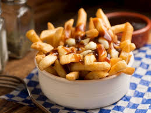
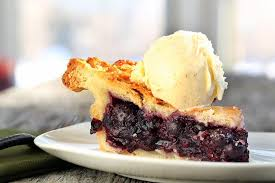

Kanada Mutfağı
Poutine

Malzemeler
• 6-8 patates, soyulmuş
• 1 yemek kaşığı bitkisel yağ, ayrıca kızartmak için daha fazlası
• 1 arpacık soğanı, kıyılmış
• 1 küçük diş sarımsak, kıyılmış
• 460 ml tavuk suyu
• 460 ml et suyu
• 2 yemek kaşığı ketçap
• 1 yemek kaşığı elma sirkesi
• 1/2 çay kaşığı Worcestershire sosu
• 2 yemek kaşığı un
• 1 tatlı kaşığı tane karabiber
• Tuz ve taze çekilmiş karabiber
• 1 su bardağı çedar peyniri
• 1 su bardağı lor peyniri
Yapılışı
1.Patatesleri uzunlamasına, çubuklar halinde kesin. Soğuk su dolu bir kasede nişastasını salması için en az 1 saat bekletin.
2.Patatesleri süzün ve iyice kurulayın.
3.Sosu yaparak başlayın. Sıvıyağı tencerede orta ateşte ısıtın. Arpacık soğan ve sarımsağı kavurun. Tavuk suyu, et suyu, ketçap, sirke, karabiber ve worcestershire sosu ekleyin ve kaynatın.
4.Bu arada ayrı bir tencerede tereyağını eritin ve unu ekleyerek hafifçe renk alana, kokusu çıkana kadar kavurun. Sos karışımının içine çırparak ekleyin ve 20 dakika pişirin.
5.Sosu tuz ve karabiber ile tatlandırarak sıcak kalmasını sağlayın.
6.Bir tepsiye çift kat kağıt havlu serin. Derin bir kızartma tavasına yağı alarak 180 derecede ısınmasını bekleyin. Patatesleri birkaç part halinde altın rengi olana kadar kızartın. Kızaran patatesleri kağıt havlu üzerine çıkarın.
7.Patatesler daha sıcakken tuz ve istenilen baharat ile baharatlayın.
8.Sosu süzün, patateslerin üzerine sosu ve peynirleri gezdirerek sıcakken servis edin. Afiyet olsun.
Montreal Smoked Meat
.jpg)
Malzemeler
• 1 su bardağı buğday unu
• ½ su bardağı çok amaçlı un
• ½ su bardağı yulaf ezmesi
• 2 çorba kaşığı toz şeker
• 2 çay kaşığı kabartma tozu
• ½ çay kaşığı tuz
• 2 yemek kaşığı eritilmiş tereyağı
• 1/3 su bardağı kuru üzüm (isteğe bağlı)
• ¾ su bardağı su
Yapılışı
1.Bir kapta yulaf ezmesi, toz şeker, kabartma tozu, tuz ve unu karıştırıyoruz.
2.Eritilmiş tereyağını, üzüm ve suyu ilave ediyoruz.
3.Un kıvamına gelmezse biraz daha su ekleyebiliriz.
4.Hamura şekil vermek için ellerimizi unluyoruz ardından hamuru yağlanmış tepsiye koyuyoruz.
5.200 derece fırında 20-25 dakika kadar pişiriyoruz.
6.Kenarları temizleyip yuvarlak şekilde kestikten sonra servis ediyoruz.
Afiyet olsun!
Tereyağlı tartlar

Malzemeler
• 12 adet muffin kalıbına sığacak şekilde kesilmiş tart hamuru yuvarlakları.
İç Dolgusu İçin
• 1/2 su bardağı (yaklaşık 115g) tereyağı (eritilmiş ve ılımış)
• 1 su bardağı esmer şeker (lezzetin sırrı budur, beyaz şeker aynı sonucu vermez)
• 1 adet büyük boy yumurta (hafifçe çırpılmış)
• 2 yemek kaşığı süt veya krema
• 1 çay kaşığı vanilya özü
• 1 tatlı kaşığı beyaz sirke veya limon suyu (tatlılığı dengelemek için çok önemlidir)
Yapılışı
1.Fırınınızı önceden 190°C'ye (alt-üst ayar) ısıtın. 12'li bir muffin tepsisini hafifçe yağlayın.
2.Hazırladığınız veya satın aldığınız tart hamuru yuvarlaklarını muffin kalıplarına nazikçe yerleştirin, kenarlarını hafifçe bastırarak şekil verin. Buzdolabında bekletin.
3.Eğer kuru üzüm veya ceviz kullanacaksanız, bunları tart hamurlarının tabanına paylaştırın.
4.Orta boy bir kapta eritilmiş tereyağı ve esmer şekeri pürüzsüz olana kadar karıştırın. İçine çırpılmış yumurtayı, sütü (veya kremayı), vanilyayı ve sirkeyi (veya limon suyunu) ekleyin. Tüm malzemeler birleşene kadar karıştırın, ancak çok fazla köpürtmeyin (fazla hava kabarmasına ve çökmesine neden olur).
5.Hazırladığınız dolguyu tart kalıplarına paylaştırın. Kalıpları yaklaşık 2/3 oranında doldurun. Çok doldurursanız pişerken taşıp yapışabilir.
6.Önceden ısıtılmış fırında yaklaşık 15-20 dakika pişirin.
7.Tartları fırından çıkarın. Tepsiden çıkarmadan önce en az 15 dakika tepsi içinde soğumalarını bekleyin. Sıcakken çıkarmaya çalışırsanız dağılırlar.
8.Ilık veya oda sıcaklığında servis yapabilirsiniz. Afiyet olsun!
Saskatoon Meyveli Turta

Malzemeler
• 2 adet hazır turta/tart hamuru (biri alt, biri üst için).
• 4-5 su bardağı saskatoon meyvesi (taze veya dondurulmuş*)
• 3/4 su bardağı toz şeker (meyvenin tatlılığına göre artırılabilir)
• 3 yemek kaşığı mısır nişastası (veya un) – kıvam vermesi için
• 1 yemek kaşığı limon suyu (lezzeti dengeler)
• 1 yemek kaşığı tereyağı (küçük parçalara ayrılmış)
• İsteğe bağlı: Yarım çay kaşığı badem özü veya tarçın.
• Üzeri için: 1 adet çırpılmış yumurta sarısı (parlaklık için).
Yapılışı
1.Fırınınızı önceden 200°C'ye (alt-üst ayarda) ayarlayın.
2.Büyük bir kasede saskatoon meyvelerini, şekeri, nişastayı, limon suyunu ve kullanıyorsanız aromayı (badem/tarçın) nazikçe karıştırın. Meyveler iyice kaplansın.
3.İlk turta hamurunu yağladığınız turta kalıbına yerleştirin.
4.Hazırladığınız meyveli harcı kalıba dökün ve eşitçe yayın. Üzerine küçük tereyağı parçalarını serpiştirin.
5.İkinci hamuru harcın üzerine kapatın. Kenarlarını parmaklarınızla veya bir çatalla bastırarak sıkıca yapıştırın.
6.Turtanın buharının çıkması için üst hamura bıçakla birkaç kesik atın. Fırça yardımıyla üzerine çırpılmış yumurta sarısını sürün.
7.Önce 200°C'de 15 dakika pişirin (bu alt tabanın kıtır olmasını sağlar).
8.Daha sonra fırın ısısını 175°C'ye düşürün ve üzeri altın sarısı olana kadar yaklaşık 35-45 dakika daha pişirin. (Kenarlar çok hızlı kızarırsa alüminyum folyo ile kapatabilirsiniz).
9.Fırından çıkardıktan sonra iç harcın kıvam alması için servis yapmadan önce en az 2 saat oda sıcaklığında soğumasını bekleyin.
Beavertails

Malzemeler
• 1/2 su bardağı ılık su
• 2 tatlı kaşığı aktif kuru maya (veya yarım paket yaş maya)
• 1/2 su bardağı ılık süt
• 1/3 su bardağı toz şeker
• 1 çay kaşığı tuz
• 1 adet yumurta
• 2 yemek kaşığı sıvı yağ (veya eritilmiş tereyağı)
• 3 - 3.5 su bardağı un (kıvama göre ayarlayın)
Kızartmak İçin
• Derin bir tencerede ayçiçek yağı veya kanola yağı (yaklaşık 5-6 cm derinlikte).
Klasik Üst Kaplama (En Gelenekseli):
• Toz şeker ve tarçın karışımı.
• Taze limon dilimleri (üzerine sıkmak için).
Yapılışı
1.Küçük bir kapta ılık su, 1 tatlı kaşığı şeker ve mayayı karıştırın. Köpürene kadar 5-10 dakika bekletin.
2.Büyük bir karıştırma kabında ılık sütü, kalan şekeri, tuzu, yumurtayı ve yağı çırpın. Mayalı karışımı ekleyin. Unu yavaş yavaş ekleyerek yoğurmaya başlayın. Ele hafifçe yapışan ama pürüzsüz, yumuşak bir hamur elde etmelisiniz.
3.Hamuru hafifçe yağlanmış bir kaba koyun, üzerini örtün ve ılık bir yerde hacmi iki katına çıkana kadar yaklaşık 1 saat mayalandırın.
4.Mayalanan hamuru hafifçe unlanmış tezgaha alın ve havasını indirin. Hamuru 8-10 eşit bezeye ayırın. Her bezeyi elinizle veya merdane yardımıyla, kunduz kuyruğuna benzeyen uzun, yassı ovaller şeklinde açın. (Çok ince olmasın, yaklaşık yarım cm kalınlık iyidir).
5.Yağı orta-yüksek ateşte ısıtın (yaklaşık 175°C). Hamurları dikkatlice sıcak yağa bırakın. Her iki tarafı da altın sarısı-kahverengi olana kadar, her yüzü yaklaşık 1-2 dakika kızartın.
6.Kızaran hamurları maşa ile alın, fazla yağını süzdürmek için kısa bir süre kağıt havlu üzerine koyun.
7.Hamur hala sıcakken hemen tarçınlı şeker karışımına bulayın (veya üzerine bolca serpin).
Tire d’érable sur la neige

Malzemeler
• %100 Gerçek Akçaağaç Şurubu (Maple Syrup)
• Temiz Kar veya Buz
• Tahta Çubuklar
• Şeker Termometresi
Yapılışı
1.Temiz karı veya çektiğiniz buzu geniş bir tepsiye veya fırın kabına sıkıca bastırarak yerleştirin. Şurubu hazırlayana kadar dondurucuda veya soğuk bir balkonda bekletin (erimemeli).
2.Akçaağaç şurubunu yüksek kenarlı bir tencereye koyun (kaynarken köpürüp yükselir). Orta-yüksek ateşte kaynatmaya başlayın.
3.Şurubun içindeki suyun buharlaşıp şeker oranının artması, yani "macun" kıvamına gelmesi gerekir. Şeker termometresi ile ölçün. Şerbet 115°C'ye (yaklaşık 238-240°F) ulaştığında hemen ocaktan alın.
4.Eğer daha az ısıtırsanız: Şerbet karın içine akar gider, macunlaşmaz.
5.Eğer çok ısıtırsanız: Kaskatı şeker olur, dişe yapışır.
6.Sıcak şerbeti (çok dikkatli olun, çok sıcaktır!) hazırladığınız soğuk karın üzerine yaklaşık 10-15 cm uzunluğunda ince şeritler halinde dökün.
7.Şerbet soğuk karla temas ettiği an katılaşmaya başlayacaktır.
8.Yaklaşık 5-10 saniye bekleyin. Tahta çubuğu şeridin bir ucuna bastırın ve yuvarlayarak şerbeti çubuğa sarın.
Pouding chômeur

Malzemeler
• 1/2 su bardağı (115g) tereyağı (oda sıcaklığında)
• 1 su bardağı toz şeker
• 1 adet yumurta
• 1.5 su bardağı un
• 2 çay kaşığı kabartma tozu
• Yarım çay kaşığı tuz
• 1 su bardağı süt
• 1 çay kaşığı vanilya özü
• 1.5 su bardağı akçaağaç şurubu (%100 saf akçaağaç şurubu, aromasız)
• Yarım su bardağı su (veya süt/krema, daha zengin bir tat için)
• 2 yemek kaşığı tereyağı
Yapılışı
1.Fırınınızı önceden 175°C'ye (alt-üst ayarda) ısıtın. Orta büyüklükte bir fırın kabını (yaklaşık 20x30 cm veya 2 litrelik kapasitede) hafifçe yağlayın.
2.Büyük bir kapta oda sıcaklığındaki tereyağı ve şekeri mikserle kremsi bir kıvam alana kadar çırpın.
3.Yumurtayı ekleyin ve iyi karıştırın.
4.Unu, kabartma tozunu ve tuzu bir kaseye eleyerek karıştırın. Bunu tereyağı karışımına değişen şekilde ekleyin, sütü ve vanilyayı da dönüşümlü olarak ekleyin. Düzgün bir sos elde olana kadar karıştırın.
5.Hazırladığınız batteri (sos) fırın kabına dökün.
6.Ayrı bir tencerede akçaağaç şurubunu, suyu ve tereyağını birlikte ılıtın (kaynamasına gerek yok). Bu karışımı hazırladığınız baterinin üzerine yavaşça döküm (karıştırmayın!).
7.Fırında 45-55 dakika pişirin, üzeri ışıl ışıl altın sarısı olana kadar. Altta güzel bir karamel sos oluşacak.
8.Fırından çıkardıktan sonra 10-15 dakika soğumasını bekleyin. Şerbetli sos ile birlikte sıcak olarak servis edin. Afiyet olsun!
Sezar Kokteyli

Malzemeler
• 1 yemek kaşığı limon suyu (veya misket limonu suyu)
• 1 yemek kaşığı limon suyu (veya misket limonu suyu)
• 2 yemek kaşığı Celery Salt (Kereviz Tuzu) – Bu çok önemlidir! Bulamazsanız, normal tuz ile karıştırılmış biraz kuru kereviz tozu kullanabilirsiniz.
• 1.5 oz (45 ml) Votka (tercihen iyi kalite)
• 4-6 oz (120-180 ml) Clamato Suyu (damak zevkinize göre ayarlayın)
• 2-3 damla Worcestershire Sosu (daha yoğun isterseniz artırabilirsiniz)
• 2-3 damla Acı Sos (Tabasco veya favori acı sosunuz)
• Bir tutam taze çekilmiş karabiber
• Buz
• 1 adet Kereviz Sapı (yapraklı ucuyla birlikte)
• 1 adet Limon veya Misket Limonu Dilimi
• 1 adet Limon veya Misket Limonu Dilimi
Yapılışı
1.Küçük bir tabağa kereviz tuzunu yayın.
2.Başka bir küçük tabağa limon/misket limonu suyunu dökün.
3.Bir highball (uzun) bardağın ağız kenarını önce limon suyuna batırın, ardından kereviz tuzuna bulayın.
4.Bardağın içine bolca buz doldurun.
5.Bardağın içine votkayı ekleyin.
6.Üzerine Clamato suyunu dökün.
7.Worcestershire sosunu, acı sosu ve karabiberi ekleyin.
8.Tüm malzemelerin iyice karışması için bir bar kaşığı ile nazikçe karıştırın.
9.Kereviz sapını ve limon/misket limonu dilimini bardağa yerleştirin.
10.Kullanıyorsanız diğer turşu garnitürlerini de ekleyin.
11.Hemen servis yapın ve Kanada'nın bu eşsiz lezzetinin tadını çıkarın!